This Issue
August 2026 edition
97 vs 214
Distinct operators recording a completed flip sale this edition, versus the same span a year ago
The flip field halved: 97 operators closed 109 resales, against 214 operators and 245 resales a year ago, and the top ten now take 31% of resale dollars
Completed flip resales fell to 109 from 245 a year ago, and the number of operators behind them fell to 97 from 214. Revenue concentrated as the field thinned: the top ten operators took 31.2% of resale dollars, up from 17.6% a year ago. Pricing did not break with the volume — median resale was $780,000 against $715,000, and median gross margin $260,000 against $250,000 — but exits took longer, at a median 249 days held versus 227. Fewer, larger, slower is the shape of this edition's exit market.
Investor Playbook
What this issue's numbers suggest checking, by investor type. Observations from recorded data — not investment, legal, or tax advice.
Fewer buyers per deal — market to the three-to-six-flip band
Wholesalers
With flipper acquisitions at 144 versus 278 a year ago, the buyer list is shorter and slower to commit. The data suggests focusing on the 512 operators with three to six lifetime flips, who average 3.8 flips and cluster in Natick 01760 (2.4% of their activity), Brockton 02301 (2.1%) and Salem 01970 (2.1%); their typical target is about 1,792 sqft, three beds, built around 1955. Wholesale counts here are a floor, since only assignments touching a recorded deed are visible.
Underwrite eight-plus months of carry and a 1.24 sale-to-assessed ceiling
Flippers
Median hold ran 249 days versus 227 a year ago, and 36% of exits took over a year. Median resale-to-assessed slipped to 1.24 from 1.27 and median gross margin percentage to 57.3% from 60.5%, so the exit ceiling is tightening even as the dollar margin holds at $260,000. Margins here are gross — rehab and carry are not public record — and with half of exits in pre-1950 stock, worth stress-testing budgets on that vintage.
The cheapest occupied basis per foot is still 2-4 unit product
Landlords
2-4 units traded at $342/sqft on 314 deals ($885,000 median) against $444/sqft for condos and $393/sqft for single family. Zips worth checking on basis are 01852 Lowell South ($368,500 median buy, 24 purchases) and 02072 ($437,500, 24 purchases), both well under the $672,516 market median. Where the small-multi discount per foot holds, the entry basis is set below the condo comparables in the same period.
Rehab paper is the contested slice; purchase-only volume is shrinking
Private lenders
Of 697 financed purchases in the trailing 12 months, 265 (38.0%) also funded rehab, median loan $412,463 at 84.4% loan-to-price. The top recorded originators skew heavily to rehab — RFLF 4 at 36 loans and 94% rehab share, Dunegrass Capital at 13 loans and 100% — while flipper buying runs at 72 per month. With fewer projects starting, the data suggests competing on the rehab-funded slice and on repeat borrowers rather than on new-operator volume.
5+ apartment basis at $281/sqft, and small multi is a rising share of exits
Multifamily investors
64 apartment 5+ purchases recorded at a $1,262,500 median and $281/sqft, the lowest per-foot basis in the residential mix. Small multifamily also rose to 14.7% of completed flips from 11.0%, meaning more renovated 2-4 unit product is reaching the market. Middlesex carried 38.5% of exits versus 35.1% a year ago while Essex fell to 11.0% from 15.5%, so comparable supply is shifting county to county.
Factoids
Numbers from this period a practitioner would repeat to a colleague. Each computed directly from recorded instruments.
144 flip acquisitions — Homes bought by flippers this edition
trending down · vs 278 a year ago
Acquisition volume fell further than exits did, so the resale pipeline entering next year is thinner than the current exit count implies. Recorded instruments lag four to eight weeks and the most recent month can still grow.
2,218 investor purchases at a $672,516 median — All recorded residential investor purchases and their median price
trending down · vs 3,241 and $675,000 a year ago
Volume is down roughly a third year over year while the median price is essentially unchanged. Sellers are not discounting into the thinner bid.
5.5% of flips in 02302 — Brockton East share of completed flips
trending up · vs 2.4% a year ago
The largest single zip-level share gain in the exit data, with 02043 also moving to 3.7% from 0.8%. Against only 109 total exits, each zip share rests on a handful of deeds.
$342/sqft on 2-4 units — Median price per square foot paid on 2-4 unit purchases, 314 deals at an $885,000 median
holding steady · vs $444/sqft on 824 condo purchases
Small multifamily remains the cheapest occupied basis per foot outside 5+ apartment stock at $281/sqft. Single family sits between at $393/sqft.
265 rehab-funded loans — Trailing-12-month purchase loans that also funded rehab, out of 697 financed purchases
holding steady · 38.0% of the 697 financed purchases in the trailing 12 months
Financed share of observed purchases was 73.7%, with a median loan of $412,463 at 84.4% loan-to-price. Terms and rates are modelled by the county feed, not recorded, so they are not published here.
49.5% of flips built pre-1950 — Share of completed flips in pre-1950 stock; small multifamily was 14.7% of exits
trending up · vs 41.7% pre-1950 and 11.0% small multi a year ago
The exit mix shifted toward older and toward 2-4 unit product, with median year built 1950 against 1955. Scope rehab budgets to that vintage rather than to last year's mix.
Market Activity — Investor Purchases
Monthly count of investor purchases of MSA properties (left axis) and the median purchase price (right axis), trailing 13 months. The most recent month can grow up to ~15% as late recordings arrive.
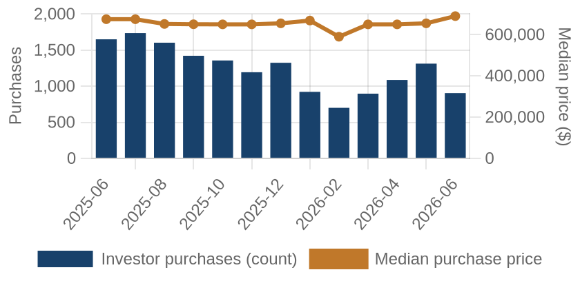
Investor purchases per month (bars) and median purchase price (line), trailing 13 months.
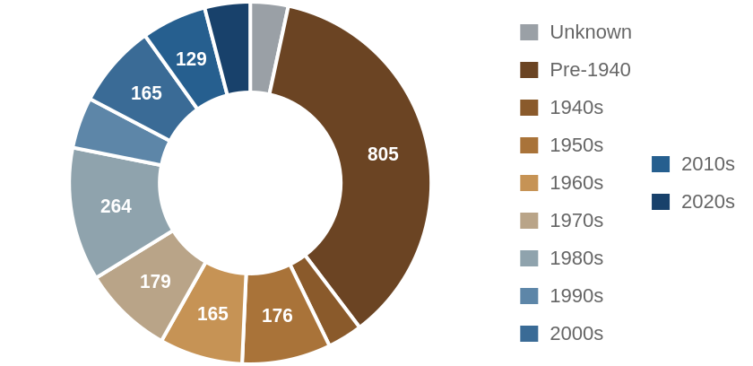
Which vintage of housing investors bought this edition, by decade built.
Where the Money Went
The geography of the period's investor activity: which zip codes saw the most recorded deals, and the largest individual transactions at street level.
The 8 busiest zip codes for investor deals
Pins rank the busiest zips by recorded investor deals (purchases + flips of existing homes) this period — #1 busiest; orange = top 3; pin size scales with deal volume. Median buy is the typical investor purchase; median sale the typical flip resale. Click a pin for details; full table below.
| # | Zip | Area | Purchases | Flips | Median buy | Median sale |
|---|
| #1 | 02127 | South Boston | 36 | 1 | $915,000 | n/a |
| #2 | 03820 | Dover | 33 | 0 | $582,000 | n/a |
| #3 | 02360 | Plymouth | 29 | 2 | $570,000 | n/a |
| #4 | 02472 | Watertown | 29 | 1 | $830,000 | n/a |
| #5 | 03038 | Derry | 28 | 0 | $512,500 | n/a |
| #6 | 02072 | STOUGHTON | 24 | 2 | $437,500 | n/a |
| #7 | 01852 | Lowell South | 24 | 1 | $368,500 | n/a |
| #8 | 02169 | Quincy | 25 | 0 | $680,000 | n/a |
A representative deal in each of the busiest zips
One deal per zip: the largest matching this market's typical house (typical for this market: 1792 sqft, 3 bed, built around 1955; priced within 4x the county assessment and under 5x its own zip's median).
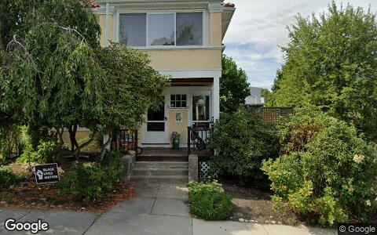
$2.1M · Purchase
33 HALL AVE # 35, Watertown MA 02472
2-4 units · 2,384 sqft · May 20
Street View Aug 2022 — before the purchase
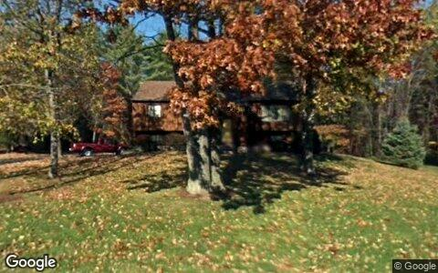
$1.7M · Purchase
20 ISAAC LUCAS CIR, Dover NH 03820
Single family · 1,814 sqft · May 26
Street View Oct 2008 — before the purchase
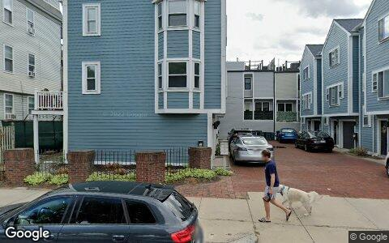
$1.4M · Purchase
333 W 4TH ST, South Boston MA 02127
Condo · 1,565 sqft · May 27
Street View Sep 2022 — before the purchase
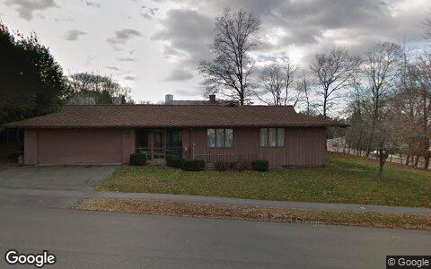
$1.3M · Purchase
312 ADAMS ST, Quincy MA 02169
Single family · 2,697 sqft · Jun 5
Street View Dec 2011 — before the purchase
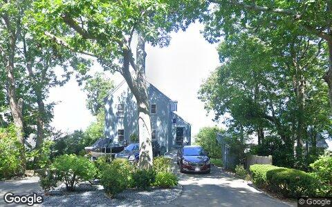
$815,000 · Purchase
80 BAY SHORE DR, Plymouth MA 02360
Single family · 1,554 sqft · May 28
Street View Aug 2021 — before the purchase
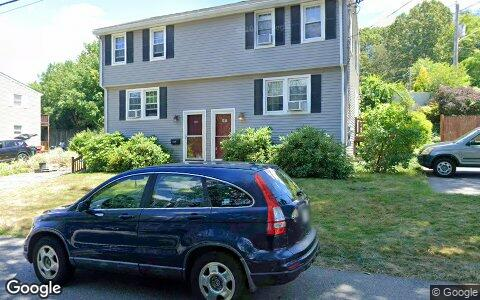
$685,000 · Purchase
286 PLEASANT ST, Lowell MA 01852
2-4 units · 1,764 sqft · May 29
Street View Jul 2025 — before the purchase
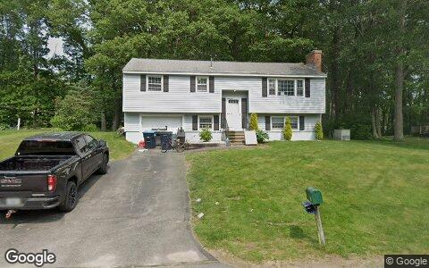
$633,400 · Purchase
56 BEDARD AVE, Derry NH 03038
Single family · 1,132 sqft · May 14
Street View Jun 2025 — before the purchase
Largest flip margin deals of the period, at street level
Gross margin = recorded sale price minus the flipper's recorded purchase price. Purchase deeds are recoverable for roughly 4 in 10 flips; rehab and carry costs are not public record.
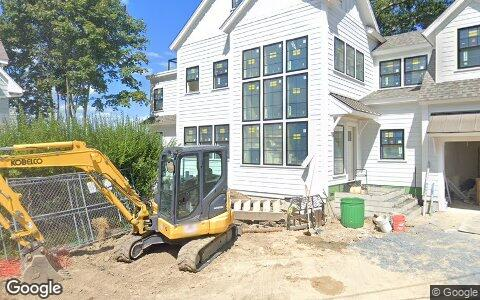
$2.2M gross · bought $1.0M (May 2024) → sold $3.3M
81 KIMBALL BEACH RD, Hingham MA 02043
Single family · 3,717 sqft · May 19
Street View Aug 2025 — during the flip
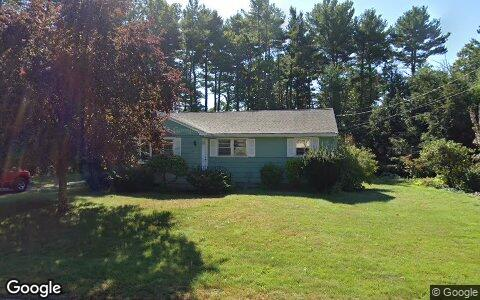
$1.8M gross · bought $650,000 (Mar 2025) → sold $2.5M
16 EVELYN ST, Burlington MA 01803
Single family · 1,028 sqft · May 26
Street View Sep 2019 — before the flip (pre-renovation)
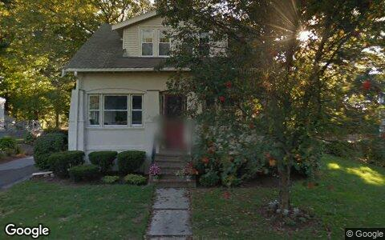
$1.8M gross · bought $900,000 (Oct 2025) → sold $2.7M
21 LAWTON RD, Needham MA 02492
Single family · 1,074 sqft · May 22
Street View Sep 2013 — before the flip (pre-renovation)
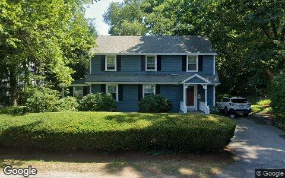
$1.8M gross · bought $1.4M (Oct 2025) → sold $3.2M
1 LAWRENCE RD, Wellesley MA 02482
Single family · 1,860 sqft · Jun 3
Street View Jul 2022 — before the flip (pre-renovation)
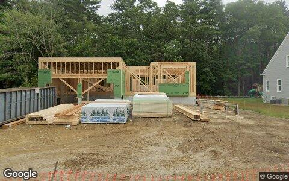
$1.7M gross · bought $820,000 (Dec 2024) → sold $2.5M
48 SUNRISE RD, Westwood MA 02090
Single family · 1,108 sqft · Jun 5
Street View Jun 2025 — during the flip
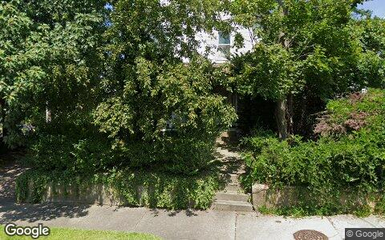
$1.6M gross · bought $625,000 (Oct 2024) → sold $2.3M
245 WEBSTER ST, West Newton MA 02465
Single family · 1,254 sqft · Jun 5
Street View Aug 2019 — before the flip (pre-renovation)
Flip Structure — Year over Year
How the flip market itself is changing: margins, who is doing the flipping, what they flip, and where. Same two calendar months, this year vs last, from the current data extract.
| Flip market structure | Same months last year | This edition |
|---|
| Flips sold | 245 | 109 |
| Median sale | $715,000 | $780,000 |
| Median $/sqft | $480 | $472 |
| Sale vs county-assessed | 1.27× | 1.24× |
| Median gross margin (matched buys) | $250,000 | $260,000 |
| Median margin % | 60% | 57% |
| Median hold | 7.5 mo | 8.2 mo |
| Homes bought by flippers | 278 | 144 |
| Net to inventory (bought − sold) | +33 | +35 |
| Active flippers | 214 | 97 |
| Top-10 flippers' revenue share | 18% | 31% |
| Median house: sqft / beds / built | 1470 / 3 / 1955 | 1524 / 3 / 1950 |
| Pre-1950 stock share | 42% | 50% |
| 2–4 unit share | 11% | 15% |
| Median distance from downtown | 25.4 km | 25.2 km |
Homes bought counts every deed recorded to a known flipper in the window, resold or not. Net to inventory is that minus flips sold. The standing stock is in the Flip Pipeline section.
Attributed profit per flip (per-investor aggregates, by drop period): Feb 26→Jun 26: 268 flips, $236,096/flip · Jun 26→Aug 26: 2 flips, $1.1M/flip.
County mix (share of flips, last year → this edition): Middlesex 35%→39% · Plymouth 19%→20% · Norfolk 20%→17% · Essex 16%→11% · Suffolk 7%→9% · Rockingham 2%→4% · Strafford 1%→0%.
Biggest zip share moves: Brockton East 2.4%→5.5% · 02043 0.8%→3.7% · 01463 0.0%→2.8% · Needham 0.0%→2.8% · 01701 2.4%→0.0% · Brockton 4.1%→1.8%.
Flip Pipeline — Buying, Selling and Inventory
Homes bought by known flippers and homes they resold, per month, alongside the stock sitting in flipper hands. A house enters inventory when a flipper buys it and leaves on the next recorded sale, at any price. Purchases still unsold after five years are treated as holds and drop out.
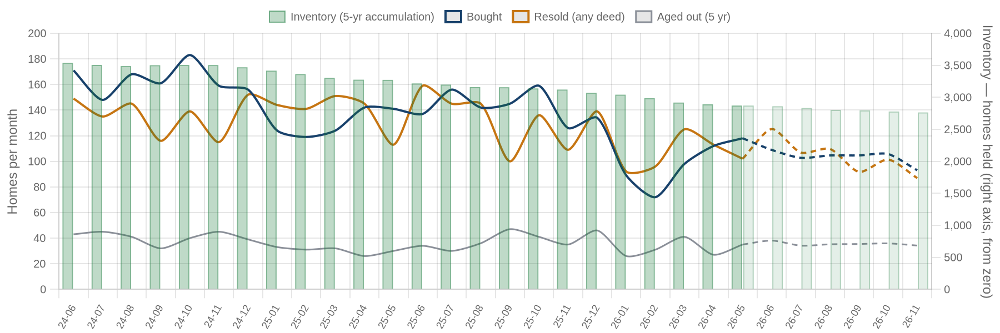
Solid = recorded, dashed = projected. Green bars are inventory on the right axis: homes bought and not yet resold. Aged out is purchases passing five years unsold. Inventory moves by bought minus resold minus aged out.
| Flip pipeline | Bought / mo | Resold / mo | Aged out / mo | Inventory |
|---|
| Latest recorded month (2026-05) | 118 | 102 | 35 | 2,871 |
| Projected (2026-11) | 93 | 87 | 34 | 2,763 |
Method: a straight-line trend through the last 24 months, adjusted for the month of the year, shown dashed as a projection. The series stops before the newest month or two, where deeds are still recording.
Who's Funding the Deals
First mortgages open on flipper purchases from Jul 2025 – Jun 2026 that have not yet resold. 74% carried recorded debt; the rest closed cash or off-record. Ranked by deal count.
74%
Purchases financed
697 of 946 flipper purchases carried a recorded first mortgage
$412,463
Typical loan
median 0.84× the purchase price
38%
Funding the rehab too
265 of 697 loans exceed the purchase price, so the lender is covering work as well as the buy
| Lender | Loans | Borrowers | Median loan | Loan vs price | Funds rehab | Median purchase |
|---|
| RFLF 4 LLC | 36 | 25 | $538,875 | 1.22× | 94% | $468,825 |
| Tailor Ridge Reit LLC | 15 | 7 | $402,500 | 1.24× | 87% | $335,000 |
| Dunegrass Capital LLC | 13 | 8 | $510,000 | 1.25× | 100% | $425,000 |
| Rockland Trust Co | 13 | 12 | $528,000 | 0.88× | 38% | $540,000 |
| Kiavi Funding INC | 9 | 8 | $551,600 | 1.13× | 89% | $530,000 |
| Village Bank | 9 | 8 | $1.6M | 1.78× | 78% | $905,000 |
| Jpmorgan Chase Bank NA | 8 | 8 | $309,730 | 0.65× | 25% | $425,000 |
| Dedham Institution for Savings | 7 | 6 | $1.4M | 1.37× | 86% | $1.1M |
| Leader Bank NA | 7 | 6 | $825,000 | 0.70× | 0% | $1.1M |
| Abl Residential Credit Acquisi | 6 | 2 | $455,500 | 1.14× | 83% | $372,500 |
Rates and terms are not published: the county feed models both. Borrowers counts the distinct flippers on each lender's book. Loan vs price is the recorded first mortgage divided by what the buyer paid. Above 1.00x the lender is funding purchase plus rehab; below it the buyer brought cash to the table. Blanket mortgages covering several parcels are excluded, as are loans outside 0.1x-3x the price. Rates and points are not public record.
Flipper Profile — The Working Flipper
The 70th–90th percentile of local flippers by lifetime flip count — the established operators below the whales: 3–6 lifetime flips each. Bath counts are not in the assessor extract.
512
Flippers in the band
each with 3–6 lifetime flips (avg 3.8)
$215,000
Median gross margin
1,404 flips matched to their purchase price
6.5 mo
Typical hold
purchase to resale, matched deals
1792 sqft · 3 bd
Typical house
median year built 1955
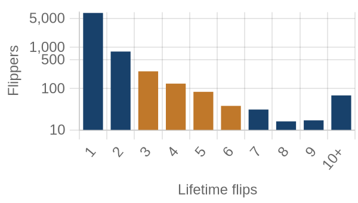
flippers by lifetime flips · orange = this band
Where they work: Natick (01760) 2% · Brockton (02301) 2% · Salem (01970) 2% · Concord (01742) 2% · Brockton East (02302) 2%.
Market Pulse
| per month, Feb–Jun 2026 | per month, Jun–Aug 2026 | change | avg/mo 2yr | avg/mo 4yr |
|---|
| ▼ Homes bought by flippers | 139 | 72 | -48% | 137 | 151 |
| ▲ Lending deals funded | 14 | 64 | +349% | — | — |
| ▲ Seller/notes held (net) | 1 | 295 | +294/mo | — | — |
| ▼ Investors (net) | 2,561 | 649 | -75% | — | — |
Flips and flipper purchases = recorded deeds, same two months each year; their 2- and 4-year columns are per-month averages of the deed series. The remaining rows come from the investor file, which spans 13 months, so they have no multi-year average (2026: Jun 2026 → Aug 2026; 2025: Feb 2026 → Jun 2026).
Past Issues
Methodology
Source Data
County recorder & assessor via FARES
Every figure is computed from recorded instruments (deeds, mortgages, assignments) and assessor property records for the five counties of the Boston-Cambridge-Newton-Elyria MSA. No surveys, no estimates, no listings data.
This edition analyzes transactions dated May 1 – June 30, 2026, as recorded through the 2026-08 data extract.
Who Counts as an Investor
Transaction-pattern identification
Investors are entities whose recorded transaction history looks like investing: rental holding (landlords), short-hold resales (flippers), private mortgage lending, note holding, or contract assignment (wholesalers). Banks, homebuilders, iBuyers, SFR funds, and government entities are identified by name and reported separately from small investors.
How Comparisons Work
Attribution deltas + same-window comparisons
The Market Pulse reports activity attributed between successive data drops, from the per-investor lifetime totals maintained upstream — periods differ in length, so per-month rates are shown. Elsewhere, "vs. year ago" compares the same calendar months one year earlier, counted from the same data extract. Transfers under $5,000 (quitclaims, partial interests) are excluded everywhere. Counts lag recording by 4–8 weeks, and the newest month can grow up to ~15% as late records arrive — direction is reliable before magnitude.
Known Limits
Floors, not ceilings
Wholesale assignments only appear when they touch a recorded deed, so those counts are a floor. Flip hold times are measured from the prior recorded sale. Names are the owner of record, which may be an LLC or trust.
About
Purpose
A working tool for small real estate investors in Greater Boston-Cambridge-Newton: what actually closed, where, at what prices, and what it suggests checking next — one theme per issue.
Cadence
Published with each bi-monthly data drop, covering the two most recent complete months of recorded activity.
Disclaimer
Observations from public records, not investment, legal, or tax advice. Past activity does not guarantee future results. Verify any property or counterparty independently before transacting.